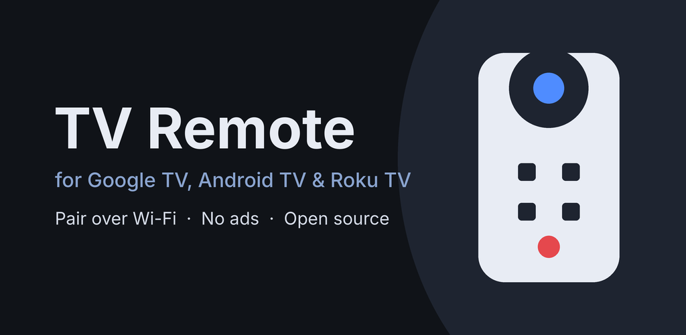

TV Remote
Turn your phone into a remote for Google TV, Android TV and Roku TV. Works with TCL, Hisense, Sony, Philips and other smart TVs on those systems.

What it does
- Finds TVs on your Wi-Fi automatically, or add one by IP address
- Pairs once with the code shown on your TV (Google TV and Android TV)
- Power, arrow pad, OK, Back, Home and Menu
- Volume and channel buttons that repeat while held, plus Mute
- Your phone's volume buttons control the TV
- Play, pause, rewind and fast-forward
- Number pad and direct input switching: TV, HDMI 1–4, AV
- Opens YouTube, Netflix, Prime Video and other apps
- Type on the TV with your phone keyboard
Setting it up
Connect your phone and your TV to the same Wi-Fi network, then open the app and tap your TV.
Google TV and Android TV
A 6-character code appears on the TV. Type it into the app. You only do this once.
Roku TV
On the TV, open Settings, then System, Advanced system settings, Control by mobile apps, and allow network access.
Installing the APK
Tap Download APK on your phone and open the file when it finishes. Your browser may warn that APK files can be harmful; this is shown for every app from outside Google Play. Android then asks you to allow installs from your browser: allow it, then tap Install. Older versions are on the releases page.
Privacy
The app talks only to your TV and collects nothing. Read the privacy policy.
Like the app?
It's free and stays free. If it saved you hunting for the remote, you can help fund the next app.
Support FreeApps